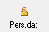
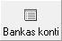
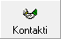
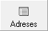
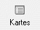

Partneris¶
Jauna Partnera pievienošana ir iespējama caur Partneru sadaļu Jauns Partneris un Partneru sarakstu .
Lai pievienotu jaunu Partneri, rīku joslā jānospiež poga
 , tiek atvērts partnera datu logs:
, tiek atvērts partnera datu logs:
{kind=link}
Sadaļā Dati, tiek aizpildīta partnera pamatdati.
Jānorāda, partneris ir Juridiska vai Fiziska persona ;
Fiziska persona:
Partnera Uzvārds un Vārds ;
Kods: partnera Vārds un Uzvārds bez garumzīmēm un mīkstinājuma zīmēm;
Personas kods; aizpildot personas kodu, domu zīmi “-” nav jāliek, programma pēc 6 ciparu ievadīšanas, “-” ieliek automatizēti;
Jāatzīmē pie kādām partneru grupām pieder šis partneris;
Jānorāda bankas konts ;
Kontaktpersonas uzvārds un vārds: ja partnerim ir vēl kāda kontaktpersona , tad tā jāpievieno caur [Jaunu kontaktpersonu aprakstu], vai arī jāpapildina kontaktpersonas aprakst caur [Atvērt kontaktpersonas aprakstu]:
{kind=link}
Arī adreses ir iespējams norādīt vairākas:
{kind=link}
Juridiska persona:
{kind=link}
 Juridiskai personai, aizpildot reģistrācijas
numuru, pirms numura nav jāraksta valsts kods (piem., LV).
Juridiskai personai, aizpildot reģistrācijas
numuru, pirms numura nav jāraksta valsts kods (piem., LV).
< persona Atbildīgā Strādājošais, parametri atbilstošie jāaktivizē tad persona, atbildīgā vai norēķinu avansu ir Partneris P arī>
{kind=link}
Partneris un strādājošais
partneru sarakstā ir jāpievieno tikai vienu reizi.
Ja partneris ir arī strādājošais, tad sadaļā Personāls var pievienot personāla uzskaitei nepieciešamo informāciju. Lai izveidotu un drukātu personas kartīti, jāaizpilda  un strādājošā apraksta sadaļa Personāls.
{kind=link}
Caur pogu  tiek pievienoti partnera banku konti. Ja ar programmu tiek vesta uzskaite vairākiem uzņēmumiem, tad strādājošā banku kontiem tiek norādīti uzņēmumi uz kuru konkrētais strādājošā bankas konts attiecas. Šie uz uzņēmumu norādītie bankas konti citu uzņēmumu programmas lietotājiem nebūs pieejami.
{kind=link}
Caur pogu  ir redzams partnera pievienoto
kontaktpersonu saraksts , un rīku joslā ar pogu
tiek pievienota jauna kontaktpersona.
{kind=link}
Caur pogu  ir redzams partnera adrešu
saraksts, un ar pogu rīku joslā tiek
pievienotas adreses. Ja ar programmu tiek vesta uzskaite vairākiem
uzņēmumiem, tad strādājošā adresēm tiek norādīti uzņēmumi uz kuru
konkrētā strādājošā adrese attiecas. Šīs uz uzņēmumu norādītās adreses
citu uzņēmumu programmas lietotājiem nebūs pieejamas.
{kind=link}
Caur pogu  un tad pogu rīku joslā
tiek pievienotas maksājumu kartes
.
{kind=link}
Personāla datu ekrāna formā jāpievieno informācija par strādājošā dzimumu, tautību, pilsonību, personas dokumentu. Informācija tiek izmantota personas kartītes drukāšanā. Atverot apraksta sadaļu Personāls, jālieto komanda Pievienot personas kartītes datu pievienošanai:
{kind=link}
Personas kartītē var pievienot datus par ģimenes sastāvu, valodu prasmi , karjeru , izglītību , apbalvojumiem un sodiem, kā arī citu informāciju . Lai labotu ierakstu, divreiz jāuzklikšķina uz rindas, kuru jālabo.
Sadaļā Pārējie dati :
{kind=link}
Tiek noteikts partnera statuss, institucionālo sektoru klasifikācija.
Mūsu konts : uzņēmuma konts, kurš piesaistīts partnerim un parādīsies norēķinu dokumentos ;
Apmaksas veids: partnerim kā pircējam tiek nodefinēts apmaksas termiņš;
Koresp. e-pasts: jānorāda e-pasta adrese uz kuru tiks sūtīti dažādi norēķinu dokumenti .
Sadaļā Citi:
{kind=link}
Ja partneris ir Piegādātājs, Pircējs vai Avansu personas grupā:
{kind=link}
Tad attiecīgi katrai partnera grupai tiek piesaistīts grāmatvediskais konts - vai nu Noklusētais no Kopīgajiem Virsgrāmatas iestādījumiem vai arī iespējams izvēlētajam partnerim norādīt individuālu - Piegādātāja, Pircēja un Av.pers. grāmatvedisko kontu no kontu plāna.
Ja visi dati par Partneri aizpildīti, tad tie jāsaglabā, nospiežot
pogu  .
.